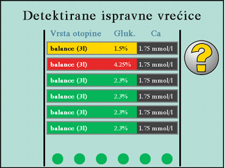

{kind=link}
{kind=link}
{kind=link}
{kind=link}
{kind=link}
TPD - Tidal peritonejska dijaliza
IPD - intermitentna peritonejska dijaliza
Kako funkcionira APD?
1. Priključenje
2. Dijaliza
3. Isključenje
APD Fresenius aparata
uključenje – isključenje
Aparat za APD treba biti u nivou sa bolesnikom.
Početni zaslon
Potvrda podataka APD terapije te nastavak pripreme aparata

Potrošni materijal i vrećice smije se izvaditi iz zaštitnog omota, tek kada aparat za APD, to ispiše na ekranu.
Lijevo plavi, a desno žuti konektor linija.
Treba biti u nivou sa aparatom, kako bi se u potpunosti ispunila otopinom.
Konektore vrećica s otopinom te priključke za konektore seta, smijete doticati samo s vanjske strane, radi kasnijeg aspetičkog pripoja konektora vrećica sa setom.
1. Skinite zaštitni čep sa linije vrećice
2. Umetnite konektor vrećice, u držač konektora
Kada aparat odbroji preostalo vrijeme, automatski će nastaviti dalje.
Aparat automatski provjerava vrećice, preko barkoda konektora otopina. Sivi krugovi na donjem rubu ekrana, po provjeri poprimaju žutu boju.
Kada aparat detektira, ispravnu vrećicu za APD terapiju, tada žuti krugovi na donjem rubu ekrana, poprimaju zelenu boju.
Provjera da su spojene i promiješane komore (ekran se javlja kod otopina sa dvostrukom komorom)
Provjera da je prelomljen šiljak i spojeno na dodatnu liniju (ekran se javlja kod otopina sa poliglukozom)
Aparat automatski spaja vrećice.Kada aparat odbroji preostalo vrijeme, automatski će nastaviti dalje.
Visina izljeva drenažne cijevi, smije se nalaziti maksimalno 2 metra, iznad ili ispod APD aparata.
Spojite drenažnu liniju (“žuto na žuto”)
Ispunjavanje linije otopinom. Kada aparat odbroji preostalo vrijeme, automatski će nastaviti dalje.
Provjerite, da li je linija bolesnika u cijelosti napunjena otopinom za PD.
Imati masku preko nosa i usta, te oprati ruke sa tekućim sapunom te dezinficirti ruke.
Postupak spajanja mora se obaviti odmah nakon završetka postupka punjenja
Spojiti bolesnika, primjenom aseptične tehnike.
Otklemite klemu na međukateteru.
Početka tretmana APD terapije.
Tretman APD terapije je započeo.
Tijekom tretmana pokazuje se stanje tretmana.
Kraja tretmana APD terapije.
Imati masku preko nosa i usta, te oprati ruke sa tekućim sapunom te dezinficirti ruke alkoholnim dezinficijensom (plivasept,...).
Prvo okrenite plavi gumb, u smjeru kazaljke na satu, na konektoru bolesnika, pa ga potom stisnite.
Zaklemajte klemu na međukateteru.
Odspojite bolesnika, primjenom aseptične tehnike.
Pražnjenje preostale neiskorištene otopine iz vrećica. Kada aparat odbroji preostalo vrijeme, automatski će nastaviti dalje. Ukoliko želimo prekinuti pražnjenje otopine iz vrećica, stisnemo X.
Aparat se automatski priprema za skidanje seta. Na ekranu se prikazuje preostalo vrijeme čekanja, do uklanjanja seta. Po isteku vremena čekanja, oglašava se zvučni alarm.
1. Izvadite set iz ladice, na način, da istovremeno povucite prema gore liniju bolesnika i drenažnu liniju, dok linije ne izađu iz držača
2. Uklonite set, linije i vrećice, sa aparata
Ladica će se automatski zatvoriti. Aparat se automatski provjerava.
Po isteku vremena provjere sistema aparat se automatski isključuje i ostane na čekanju (Standby). Kao oznaka Standby ostane svijetliti zelena žaruljica, dolje desno na aparatu. Aparat nije potrebno gasiti iz struje